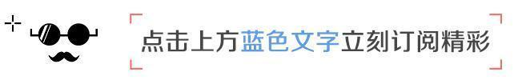
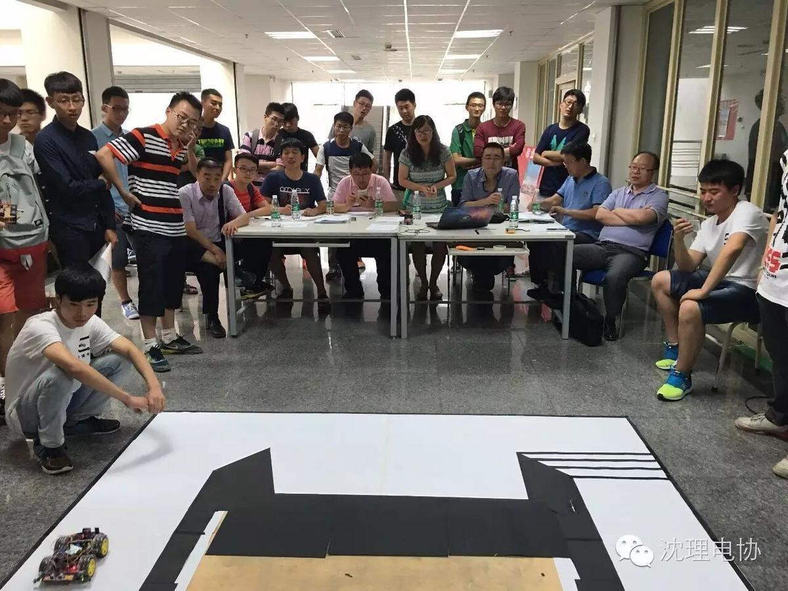
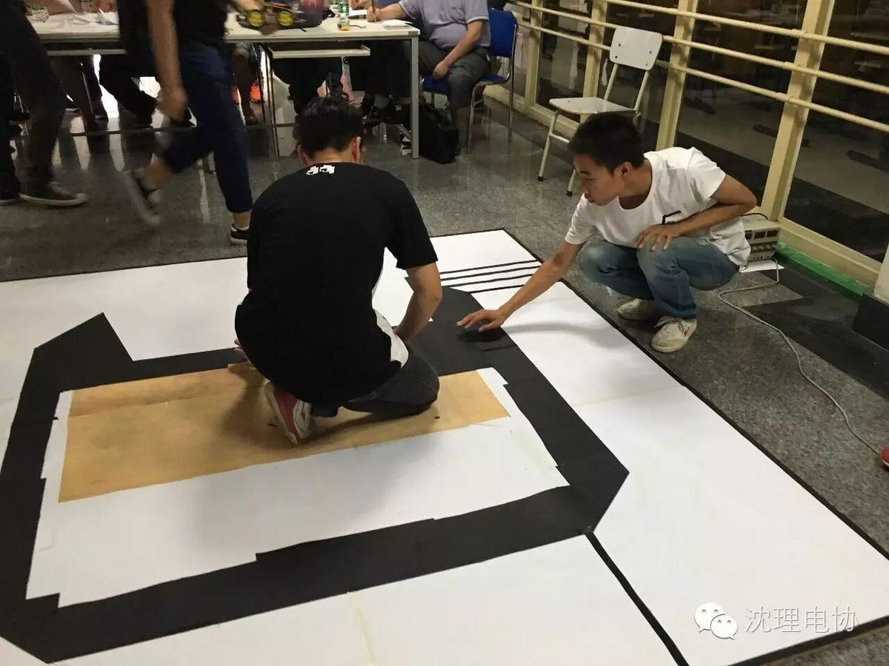
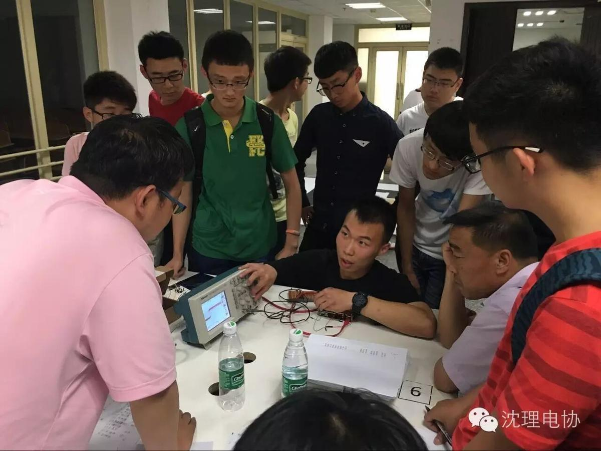
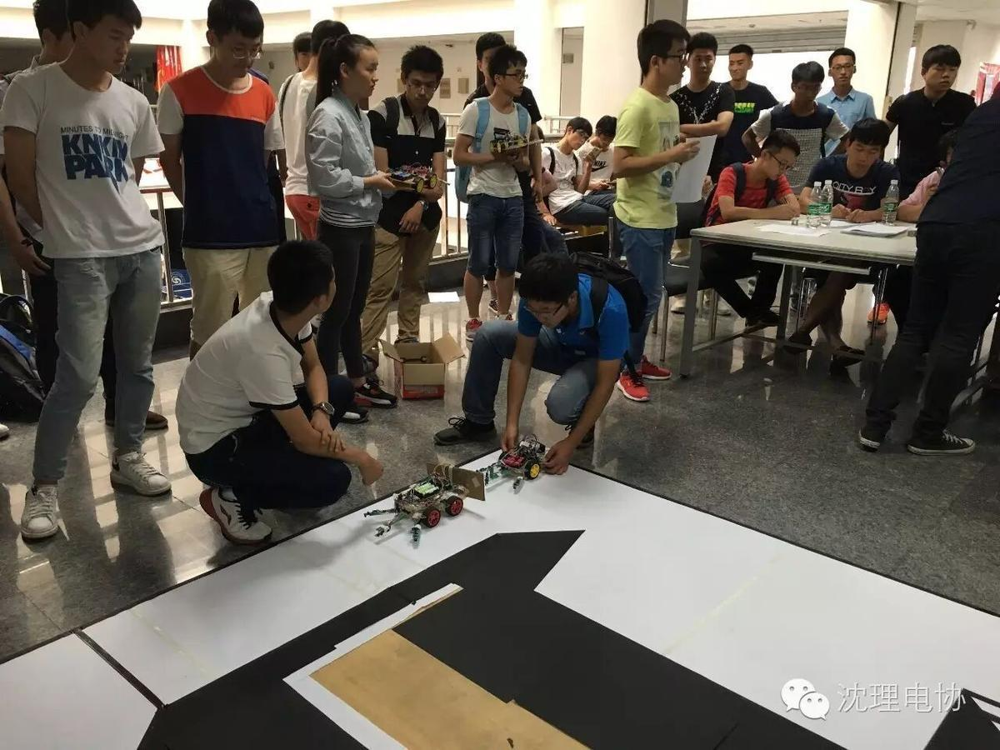
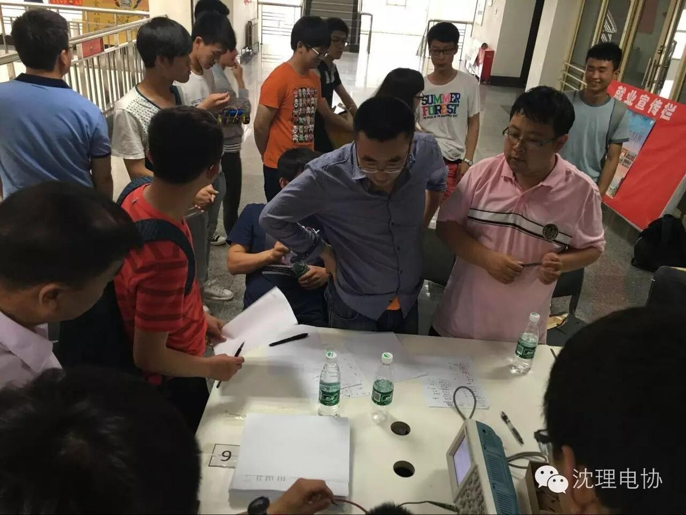
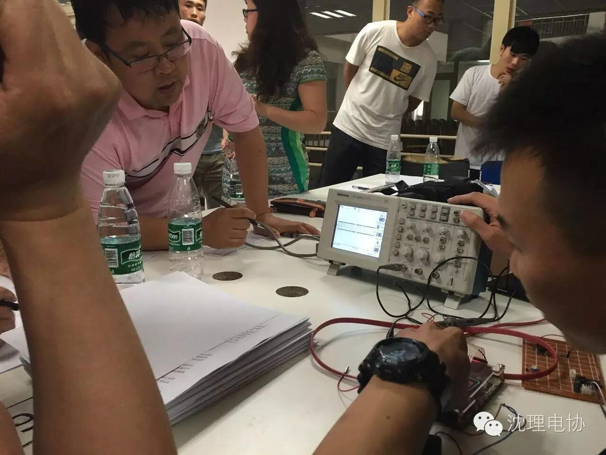
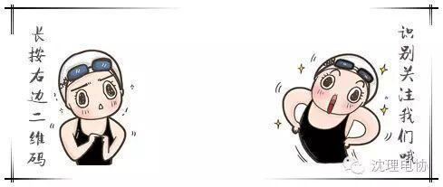

【电协暑期播报】

沈理电协暑期播报
开学啦！
暑假过后，沈理电协微信平台强势回归！
微信平台将继续上一学期的两天一更，敬请关注！
如果你对我们有更好的想法和建议欢迎留言。
更加有趣，有料，尽在沈理电协微信平台。

6月14号，电子设计大赛沈阳理工校赛在文体中心进行选拔。
校赛流程按照省赛要求，进行了限时制作，密封保存，现场评审等环节。现场多位老师参加了作品评选。最终选出25支队伍代表学校参加省赛。






8月31号，辽宁省“TI”杯电子设计大赛在辽宁工业大学举行，沈阳理工大学电子技术与应用协会成功参赛。


编/高天
